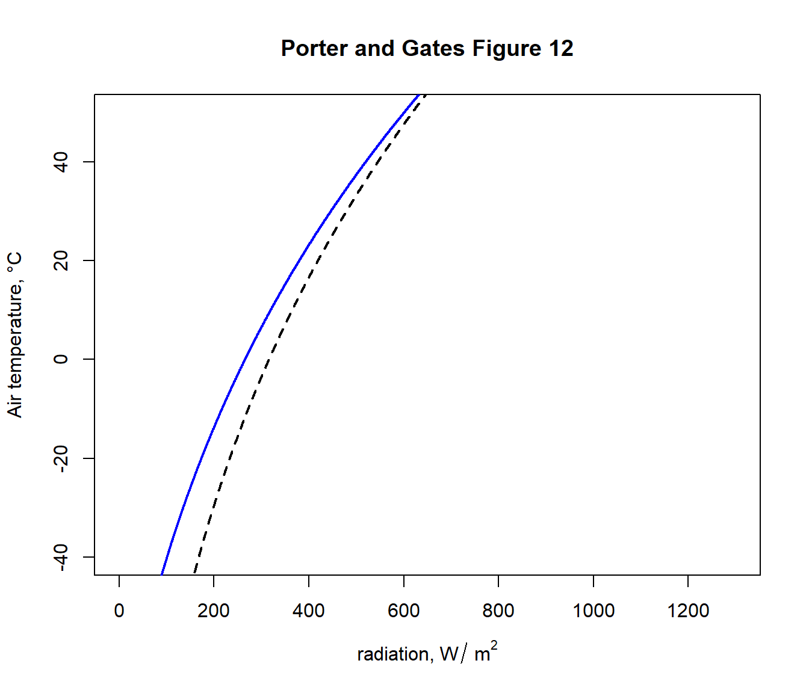
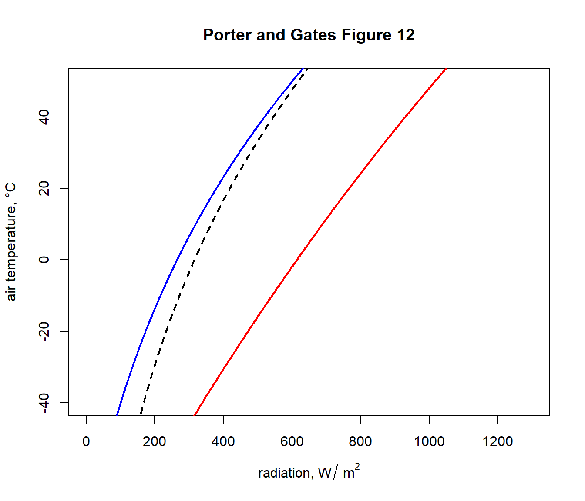
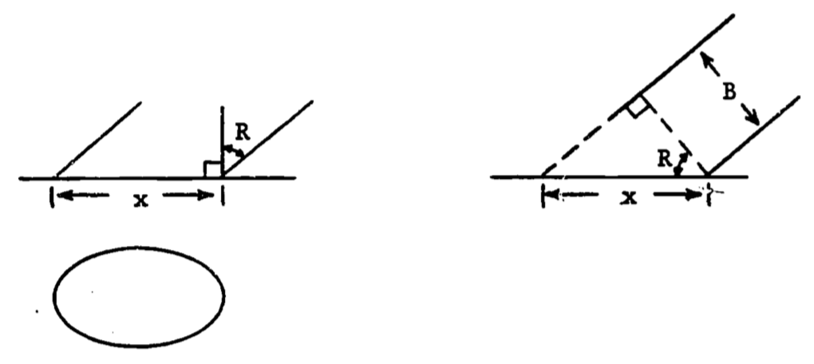
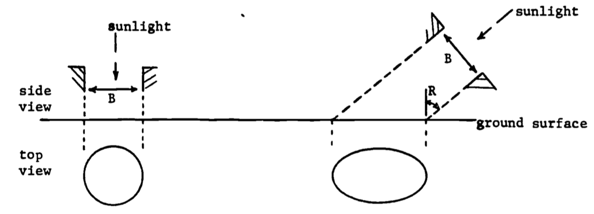

1.10 ANSWERS TO THE PROBLEM SET
General
- \(A(T)\) represents the total change in the resource. Thus the rate of change, \(P(t)\), is integrated: \[A(T)=\int^T_0 P(t)dt \]
- With \(P(t) = P_0 e^{kt}\), \[A(T)=\int^T_0 P_0 e^{kt} dt= (P_0/k)(e^{kT}-1) \]
- The initial use rate in \(P_0\), the rate of increase is \(k\), and the time interval ends at 1983-1973 = 10 years. Thus
## [1] 107081638627- We solve for \(T\). The total change equals the current reserves (at \(t=0\)); thus, the parameters are
require("stats")
library(stats)
P0= 6.99 * 10^9 #kg
k=0.08
A_T= 336 * 10^9 #kg
#Using A(T)= (P0/k)*(exp(k*T)-1)
#Solve T in years
Tsolve= function(T) (P0/k)*(exp(k*T)-1) - A_T
uniroot(Tsolve, interval=c(0, 100))$root## [1] 19.725622a. Check the initial conditions: N(0)=5000, W(0)=80.
## [1] 5000## [1] 80#Biomass B(t)=N(t)*W(t)
#Calculate biomass at 12 months
B_t= function(time) 5000*exp(-0.5*time) * 10000*(1-0.8*exp(-0.05*time))^3
B_t(12)## [1] 21876.47- Average biomass (g) for the first 12 months, \(\overline B(12)\) uses the definite integral. \[\overline B(12)= (1/12) \int^{12}_0 B(t)dt \] Substitution for \(B(T)\) gives \[\overline B(12)= (1/12) \int^{12}_0 5.0*10^7 e^{-0.5t} (1-0.8e^{-0.05t})^3 dt \] \[\overline B(12)= 4.17 \times 10^6 \int^{12}_0 e^{-0.5t}(1-0.8e^{-0.05t})^3 dt\] Integrate by parts where \(u=(1-0.8e^{-0.05t})^3\) and \(dv= e^{-0.5t} dt\) \[\int^{12}_0 e^{-0.5t}(1-0.8e^{-0.05t})^3 dt\]
\[= \frac{e^{-0.5t}}{-0.5}(1-0.8e^{-0.05t})^3 \Biggr|^{12}_0 - \int^{12}_0 \frac{e^{-0.5t}}{-0.5}(3)(1-0.8e^{-0.05t})^2(0.04)e^{-0.05t}dt \] \[=(-0.00496)(0.177)+0.016+0.24 \int^{12}_0 e^{-0.55t}(1-0.8e^{-0.05t})^2 dt\] Integrate by parts again with \(u=(1-0.8e^{-0.05t})^2\) and \(dv= e^{-0.55t} dt\) An intermediate stage is (two steps skipped), with the left side included, \[\int^{12}_0 e^{-0.5t}(1-0.8e^{-0.05t})^3 dt= 0.0324 +0.0349 \int^{12}_0 e^{-0.60t}(1-0.8e^{-0.05t}) dt\] \[= 0.0324 +0.0349 \int^{12}_0 e^{-0.60t}-0.8e^{-0.65t} dt = 0.0324 + 0.0349(0.4353)=0.0476\]
## [1] 198492B_t= function(time){5000 * exp(-0.5 * time) * 10000 *
(1 - 0.8 * exp(-0.05 * time))^3}
#Initial biomass in g
B_t(0)## [1] 4e+05#Plot the graph of biomass over time.
plot(0:12, B_t(0:12)/10^3, ylab="Production (kg)",
xlab= "Time (months)", type='l')
3a. The rate of change of \(N\) is a decrease (i.e. negative) and proportional to \(N\). For \(k > 0\), we have \(\frac{dN}{dt}=-kN\).
Separate variables \[\frac{dN}{N}=-kdt\] \[\int \frac{dN}{N}= \int -kdt\] \(\ln N= -kt+C\), \(C\) = integration constant \[N= e^{-kt}e^{C}\] But \(N(0)=N_0\). Thus \(N(0)=N_0=e^0 e^C=e^C\) and the solution is \(N(t)= N_0e^{-kt}\).
Substitute into the solution equation. \[\begin{align*} N(t_1)=N_0e^{-kt_1} \\ 0.5 N_0= N_0e^{-kt_1} \\ \ln(0.5)=-kt_1 \\ t_1= -(\ln(0.5))/k \\ = (\ln 2)/k \end{align*}\]
Let N(t) be the number of \(C^{14}\) atoms in the wood. Then \(N(t)/N_0 = 0.87\). The half life of 5568 gives \((\ln2)/k=5568\), \(k= (\ln 2)/5568=0.0001245\). The equation for N(t) then gives \[\begin{align*} N(t)/N_0=e^{-kt} \\ 0.87 = exp(-0.0001245t)\\ \ln(0.87) = -0.0001245t\\ t=1119 years \end{align*}\]
- a is the amplitude (half the total change in tidal height); b is \(2\pi/p\) where p=period=\(2|T_{high}-T_{low}|\); and \(T_h\) is the phase shift or lag. The simple cosine function begins at \(t=0\) so the lag is the time of high tide. \(H_a\) is the vertical shift.
#first interval
h_h= 2.47
h_l= -0.82
time_h= 4+35/60
time_l= 11+40/60
#second interval
h_h= 2.77
h_l= -0.82
time_h= 19+40/60
time_l= 11+40/60
a= (h_h-h_l)/2
p= 2*abs(time_h-time_l)
b=2*pi/p
time_h= time_h #phase lag, time of high tide
Ha= (h_h+h_l)/2
a; p; b; time_h; Ha## [1] 1.795## [1] 16## [1] 0.3926991## [1] 19.66667## [1] 0.975H=function(a,b,time, time_h, Ha) a*cos(b*(time-time_h))+Ha
plot(1:24, H(a=a,b=b,time=1:24, time_h=time_h, Ha=Ha), type='l',
xlab="Tide height (m)", ylab="Time (hours)") b. \(\overline H\)= average height, first interval = 7.24 hours. \[\begin{align*} \overline H&= \frac{1}{7.24} \int^{11.82}_{4.58}a \cos(bT-bT_h)+H_a dt \\ &= \frac{1}{7.24} (-a/b)(\sin(11.82b-4.58b)-sin(4.58b-4.58b)) + \frac{1}{7.24} (H_a)(11.82-4.58)\\ &=-\frac{a}{7.24b}(\sin(7.24(2\pi/2(7.24)))-0)+H_a\\ &=H_a \text{, since } \sin \pi=0. \end{align*}\]
For the two intervals combined, we must weight the average height in each interval by the length of the time interval. \[\begin{align*} \overline H&= \frac{1}{15.09} \int^{19.67}_{4.58}H(t)dt=\frac{1}{15.09}\int^{11.82}_{4.58}H(t)dt +\frac{1}{15.09}\int^{19.67}_{11.82}H(t)dt\\ &=\frac{7.24}{15.09}\frac{1}{7.24}\int^{11.82}_{4.58}H(t)dt +\frac{7.85}{15.09}\frac{1}{7.85}\int^{19.67}_{11.82}H(t)dt\\ &=\frac{7.24}{15.09} \overline H_1 +\frac{7.85}{15.09} \overline H_2\\ \end{align*}\]
- We need the times of day when the 0.0 tide level is reached. The easiest way is to invert the function \(H(t)\) for each subinterval. \[\begin{align*} &H= a \cos(b(T-T_h))+H_a\\ &(H-H_a)/a= \cos(b(T-T_h))\\ &\cos^{-1}((H-H_a)/a)=b(T-T_h)\\ &(1/b) \cos^{-1}((H-H_a)/a)+T_h=T\\ \end{align*}\] Now substitute the appropriate constants and 0 for \(H\).
#first interval
h_h= 2.47
h_l= -0.82
time_h= 4+35/60
time_l= 11+40/60
#second interval
h_h= 2.77
h_l= -0.82
time_h= 19+40/60
time_l= 11+40/60
a= (h_h-h_l)/2
p= 2*abs(time_h-time_l)
b=2*pi/p
time_h= time_h #phase lag, time of high tide
Ha= (h_h+h_l)/2
H=0
#Estimate T
(1/b)*acos((H-Ha)/a)+time_h## [1] 25.12889This answer is obviously wrong since the 0.0 height must be attained sometime between low tide (11.82 hours) and the next high tide (19.67 hours). The fallacy is in treating the “arcos x” as an inverse function. It is one-to-one only when the domain of “cos x” is restricted to \([0,\pi]\); i.e., arcos x always has \([0,\pi]\) as its range. Thus the first term is \[\frac{1}{0.400}\cos^{-1}(-0.975/1.795)\] correctly tells how far the maximum (\(T_h\)) is from the desired time \(T\), but now whether \(T\) lies above or below \(T_h\). With the second subinterval, \(T\) is obviously below \(T_h\) and hence we subtract from \(T_h\):
## [1] 14.30747\[\begin{align*} \frac{\partial E}{\partial B} &=\sum^n_{i=1}2[Ax_i+B-y_i] \\ E&= \sum^n_{i=1}[Ax_i+B-y_i]^2\\ \frac{\partial E}{\partial A} &= \sum^n_{i=1}[Ax_i+B-y_i]x_i\\ \end{align*}\] Set equal to zero: \[\begin{align} \sum^n_{i=1}2[Ax_i+B-y_i]x_i=0 \notag \\ \sum^n_{i=1}[Ax_i+B-y_i]x_i=0 \notag \\ \frac{\partial E}{\partial B} =\sum^n_{i=1}2[Ax_i+B-y_i] \tag{1.30} \end{align}\]
Equate to 0 and divide by 2: \[\begin{equation} \sum^n_{i=1}[Ax_i+B-y_i]=0 \tag{1.31} \end{equation}\] Thus we have two equations which are linear in A and B. This is more easily seen if we rework them. From ((1.30))
\[\begin{equation} A(\sum^n_{i=1}x_i^2)+B(\sum^n_{i=1}x_i)-(\sum^n_{i=1}x_iy_i)=0 \tag{1.32} \end{equation}\]
And ((1.31)) becomes \[\begin{equation} A(\sum^n_{i=1}x_i^2)+nB-(\sum^n_{i=1}y_i)=0 \tag{1.33} \end{equation}\]
- Eq. (1.32) is: \[A(1353.25) + B(65.90) - (3750.50) = 0\] Eq. (1.33) is: \[A(65.90) + 5B - (268.50) = 0\]
We solve for A and B.
\[\begin{align*} B &= (268.50 - 65.90A)/5 \\ A &= (3750.50 - 65.90B)/(1353.25) \\ &= 2.771 - 2.615 + 0.642A = 0.156 + 0.642A \\ \end{align*}\]
Thus
\[\begin{align*} A &= 0.156/(1 - 0.642) = 0.436 \\ B &= (268.50 - 65.90(0.436))/5 = 47.95 \\ \end{align*}\]
To prove that these values for \(A\), \(B\) do give a minimum sum of squares, we must show that, for \(A\) = 0.44, \(B\) = 47.95,
- \(\partial f/\partial A=\partial f/\partial B = 0\)
- \((\partial^2f/\partial A^2)(\partial^2f/\partial B^2)-(\partial^2f/\partial A\partial B)^2 > 0\)
- \(\partial^2f/\partial A^2 > 0\),
where \(f\) is the sum of squares \[f=\sum_i(y_i-Ax_i-B)^2\] We have \[\begin{align*} \partial f/\partial A &= -2\sum_i(y_i-Ax_i-B)x_i \\ \partial f/\partial B &= -2\sum_i(y_i-Ax_i-B) \\ \end{align*}\]
Since \(A\), \(B\) were calculated by setting these derivatives to zero, we do not need to check (i). \[\begin{align*} \partial^2f/\partial A^2 &= 2\sum_ix^2_i,\;\;\partial^2f/\partial B^2 = 2n \\ \partial^2f/\partial A\partial B &= 2 \sum_ix_i \\ \end{align*}\]
Substituting into (ii) gives \[(2\sum_ix^2_i)(2n)-4(\sum_ix_i)^2=20\sum_ix^2_i-4(\sum_ix_i)^2\] \[ = 20(1353.25) - 4(65.90)^2\] \[=9693.76 > 0\] Note that (iii) is obviously satisfied so we have a minimum for \(f\).
- Begin with \[y = Axe^{Bx}\] Divide by \(x\) to isolate the exponential function. \[y/x=Ae^{Bx}\] Now take logarithms of both sides. \[ln(y/x)=lnA+Bx\] Thus, in the form \(h=f+gx\), we have \[\begin{align*} h &= ln(y/x) \\ f &= ln A \\ g &= B \\ \end{align*}\]
The transformed table is below.
| \(x\) | \(h\) |
|---|---|
| 3.0 | 2.565 |
| 5.3 | 2.340 |
| 9.6 | 1.790 |
| 18.0 | 1.204 |
| 30.0 | 0.642 |
The least squares calculations give the transformed equation
\[h = 2.642 - 0.071x\]
and thus
\[y = 14.041x e^{-0.071x}\]
- The following graph (fig. 4A) compares the least squares line and exponential curve of parts (a) and (b) with the data and the exponential curve in the text (eqn. (1.12)). The fit of eqn. ((1.12)) seems superior to that of the curve from (b). However, the fit of
\[h = 2.642 - 0.071x\]
to the transformed data is quite good, as shown by fig. 5A. Thus we conclude that a good least squares fit to transformed data does not necessarily imply a good curve fit to the original data.

